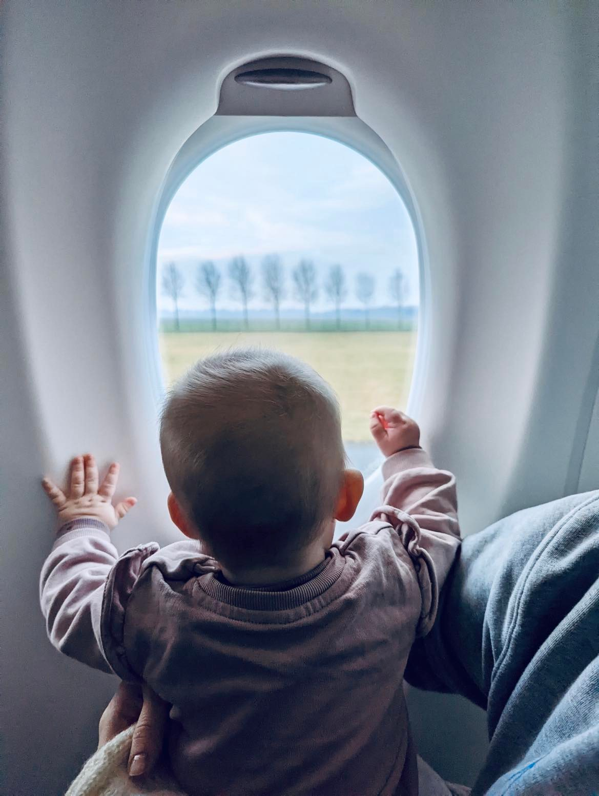
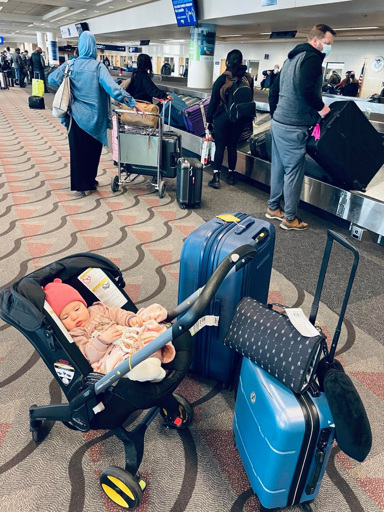
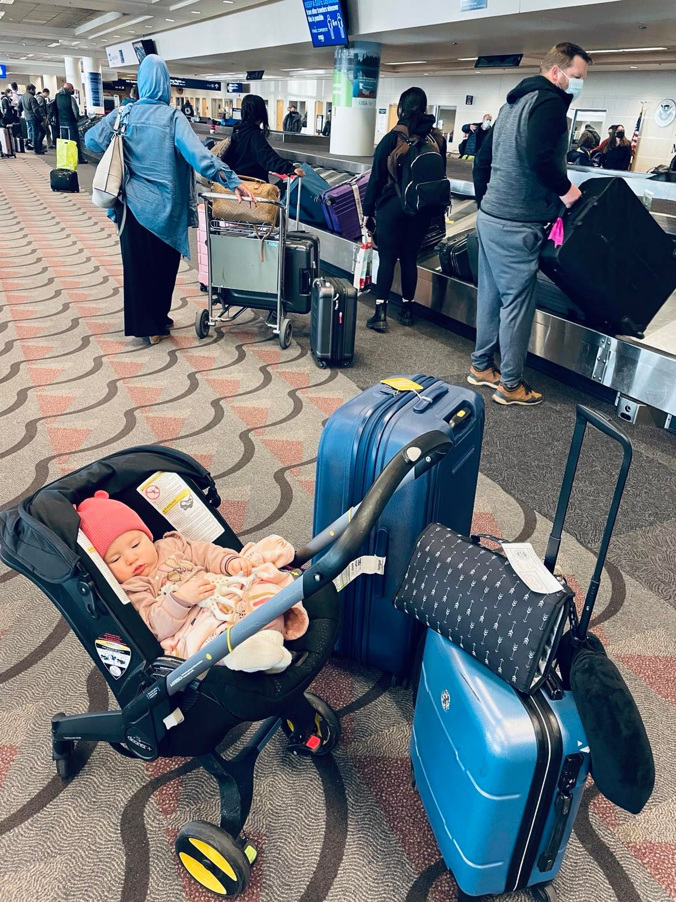
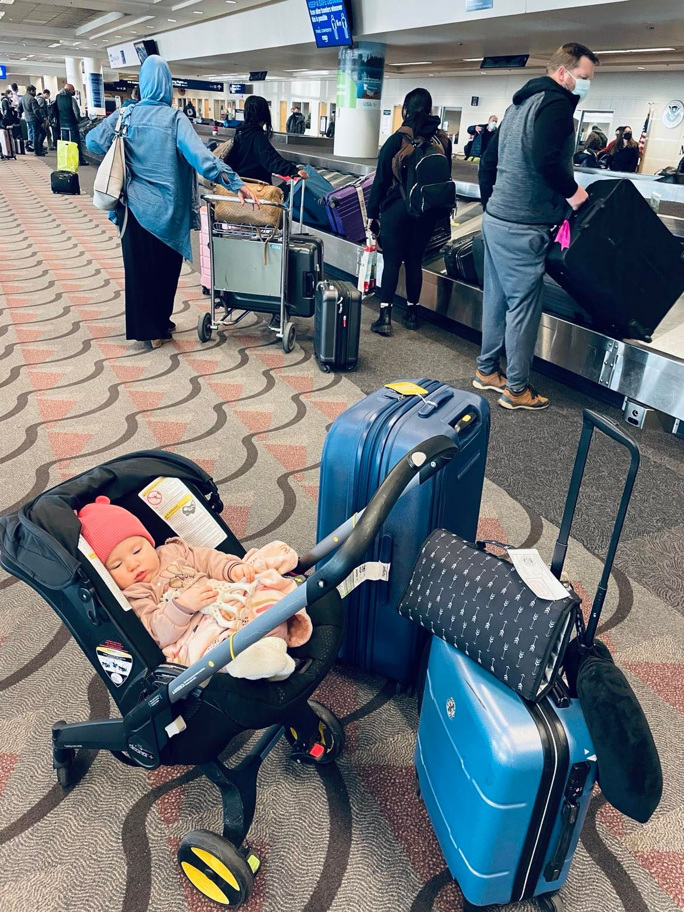
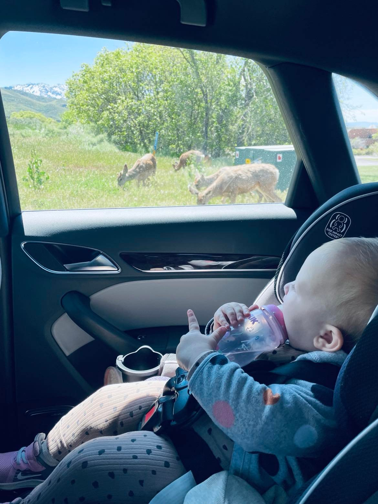

Tourist of the world
the world is as big as you make it
6 Tips For Flying With Baby
I hope those pieces of advice will help you to reach our sandy beaches, snowy peaks or big city streets in sanity. These tips are adapted for moms whose babies main food is breast milk or formula.

 


8 Tips For Traveling With Baby By Car
Do not travel with a baby in a car unless your other choice is to sit at home and go crazy. I had this amazing (from the crazy side) experience, because my husband and I wanted to explore Utah as much as we could while we had only two years in the US. My sincere advice is to travel with the car at least when your toddler can talk and express himself not only by screaming, falling or crying. Anyway if you want to experience the driving with baby that are my tips:


- Lower your expectations for sightseeing. You are not going to walk as much as you could, you are not going to see as much as you could, but at the end of the day you will be as exhausted as possible.
- Prepare that everything will be according to your baby. You will be stopping each few hours or more often. If you want to have lunch, but your baby will be sleeping you will not stop. Take snacks for yourself (a lot of).
- A lot of entertainment staff: books, toys and anything that makes your baby engaged. The thing that worked best for me were the books. My baby loved and still loves to flip and read books.
- Snacks if your baby already eats solids. Many different snacks, some ideas: corn puffs, cheese, berries (if you are not afraid of mess), cookies, pressed purees.
- Breastfeeding. It really helps to calm down and to make the baby fall asleep.
- Always have wet wipes on hand. Wet wipes are a thing when you are a mom.
- Take a lot of photos, because you (at least I) will enjoy the journey more after it is finished.
- Keep calm. Probably you will be driving somewhere in a developed country. There will be stores, pharmacists and hospitals on the way.